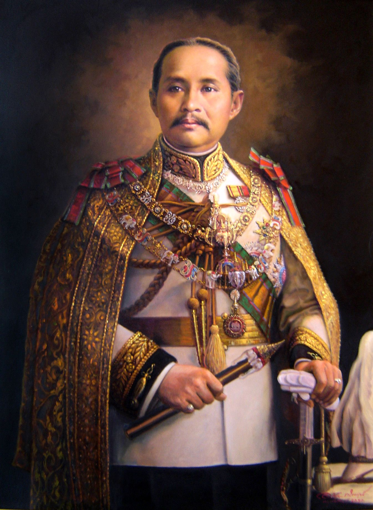

พระบาทสมเด็จพระจอมเกล้าเจ้าอยู่หัว

พระบาทสมเด็จพระจอมเกล้าเจ้าอยู่หัว
พระบาทสมเด็จพระจอมเกล้าเจ้าอยู่หัว (King Mongkut) รัชกาลที่ 4 ทรงมีวิสัยทัศน์นำพาสยามสู่ความทันสมัย (Modernization) โดยทรงเป็นกษัตริย์ไทยพระองค์แรกที่เปิดรับเทคโนโลยีการถ่ายภาพจากตะวันตก เพื่อใช้เป็นเครื่องมือทางการทูตยุคใหม่ในการแสดงความเจริญก้าวหน้าของประเทศ
พระราชสมภพ 18 ตุลาคม 1804 (พ.ศ. 2347) – สวรรคต 1 ตุลาคม 1868 (พ.ศ. 2411) ทรงผนวชเป็นพระภิกษุยาวนานถึง 27 ปีก่อนเสด็จขึ้นครองราชย์ ในช่วงเวลานั้นทรงศึกษาภาษาอังกฤษ ภาษาละติน วิทยาศาสตร์ และดาราศาสตร์จากมิชชันนารีชาวตะวันตก ทำให้ทรงมีพระวิสัยทัศน์ที่กว้างไกลและเข้าใจถึงความก้าวหน้าของโลกภายนอก
พระบรมฉายาลักษณ์ที่โดดเด่นและสร้างความตื่นตะลึงให้กับชาติตะวันตก คือภาพที่พระองค์ทรงฉลองพระองค์แบบกษัตริย์ตะวันตก หรือภาพที่ทรงประทับคู่กับสมเด็จพระเทพศิรินทราบรมราชินี พระอัครมเหสี รวมถึงพระราชโอรสและพระราชธิดา ภาพถ่ายเหล่านี้ถูกจัดองค์ประกอบอย่างพิถีพิถัน สื่อถึงพระราชอำนาจ ความทันสมัย และความเป็นสากลของราชสำนักสยาม